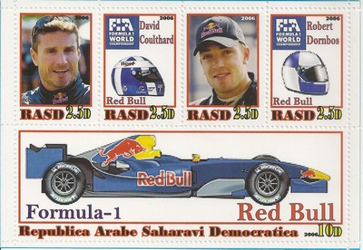
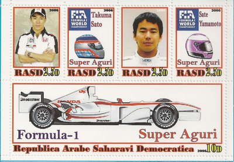
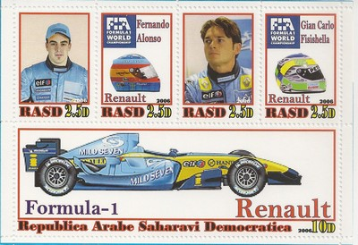
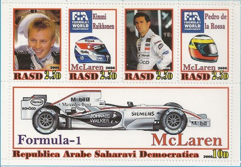
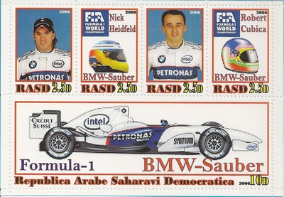

Sahrawi Arab Democratic Republic
 |
 Issue date: 2006 A souvenir sheet featuring the Red Bull Racing team. In 2006, the Red Bull RB2 used the Ferrari V8 engine (following the move from the V10s). This was Red Bull Racing's second season in F1 - David Coulthard delivered the team's first podium at the Monaco Grand Prix. The team finished 7th in the constructors' championship.  Issue date: 2006 A souvenir sheet featuring the Super Aguri team. In 2006 the Super Aguri team first appeared on the grid; although based in Tokyo, the team operated from the former Arrows factory in Oxfordshire. The first chassis entered by Super Aguri was based on the 2002 Arrows A23 and was powered by the Honda V8 engine. The team never achieved any success in F1 and withdrew from the sport after the fourth race in 2008 due to a lack if funding.  Issue date: 2006 A souvenir sheet featuring the Renault F1 team. Renault has competed in F1 since 1977, in 2006 the team's contender was the R26 which featured a seven speed gearbox made of titanium. The team celebrated its 200th Grand Prix at the 2006 Silverstone Grand Prix, with a win by Fernando Alonso. With the R26, Fernando Alonso and Giancarlo Fisichella secured the constructors' championship for Renault.  Issue date: 2006 A souvenir sheet featuring the Williams F1 team. Williams has competed in F1 since 1977, in 2006 the team's contender was the FW28 which was powered by the Cosworth V8. The season started well, both drivers scored points in the opening race of the season, and Nico Rosberg set the fastest lap at the Bahrain Grand Prix. However, the rest of the season was very disappointing, with 20 retirements out of 36 starts for the two cars. The team failed to finish on the podium all season, the first time since Williams' first season in 1977. The team finished eighth in the constructors' championship, with only 11 points.  Issue date: 2006 A souvenir sheet featuring the McLaren F1 team. McLaren has competed in F1 since 1963, the team was founded by New Zealander Bruce McLaren, and won its first Grand Prix at the 1968 Belgian Grand Prix. In 2006, the team's contender was the MP4/21 which was powered by the Mercedes V8. The car was fast but unreliable and so proved no match for the dominant Renaults and Ferraris, as a result McLaren could only manage third in the constructors' championship.  Issue date: 2006 A souvenir sheet featuring the Honda F1 team. Honda has competed in F1 on and off since 1964, both as a constructor and an engine supplier. In 2006, Honda re-entered F1 as a constructor having bought the majority stake in BAR at the end of 2005. The highlight of 2006 for Honda was at the Hungarian Grand Prix - Jenson Button started 14th on the grid, but went on to win his first Grand Prix. Honda came fourth in the constructors' championship in 2006.  Issue date: 2006 A souvenir sheet featuring the BMW Sauber F1 team. BMW ended its engine supply agreement with Williams at the end of the 2005 and for the 2006 season, BMW bought the Sauber team outright (but retained the Sauber name). In 2006, the team's contender, the F1.06, took 5th place in the constructors' championship, a marked improvement on Sauber's previous season. |